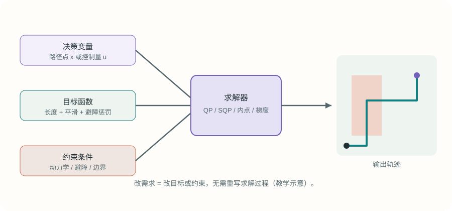
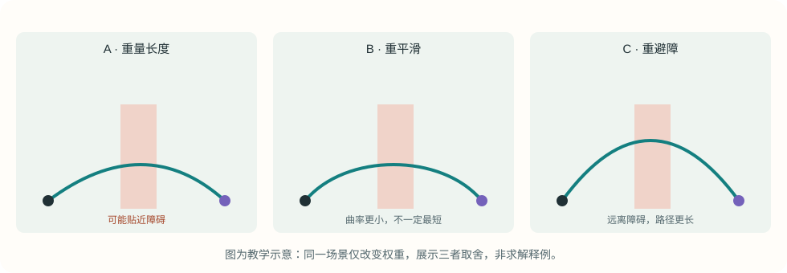

优化模型方法：把路径规划写成一个优化问题
A*、RRT*、DWA 都是“专用”算法，各有一套启发式或采样规则。换一个视角：把路径规划写成一个带约束的优化问题，交给通用求解器。本章讲清决策变量、目标函数与约束，MPC 的滚动优化，以及轨迹优化的梯度方法与局部极小陷阱。
专用算法之外的另一条路
前面各章的方法都自带一套求解规则：A* 用代价函数与启发式，RRT* 用采样与重连，DWA 在速度空间采样。它们各自解决得很好，但当你同时要求“避障 + 平滑 + 满足加速度与转向限制 + 固定起终点位姿”时，逐个算法拼接会很别扭。
一个具体困境：先用 A* 算出一条几何路径，再做后处理平滑（第 15 章）。平滑会改变路径的几何，原本经过碰撞检查的路径可能被“拉”进障碍物；而且平滑一般不保证满足加速度、曲率限制。于是你只能反复调参、重做检查。
优化方法换一个思路：把“想要什么（目标）”与“必须满足什么（约束）”一起写进一个数学问题，让求解器同时考虑。它不是要取代采样或图搜索，而是多了一种统一的表达方式。
优化的“解”依赖于目标函数与约束是否把真实需求写对。写得不对，求解器会把一个错的问题解得很漂亮。并且优化问题通常非凸，解可能是局部极小——这一点在第 4 节讨论。
三要素与标准形式
把路径规划写成优化问题，只需回答三个问题：
- 决策变量——要确定什么。可以是路径上的关键点
x0,…,xN，也可以是每段的控制量u0,…,uN-1（加速度、转向角等）。 - 目标函数——想最小化什么。常见的有路径长度、时间、能耗，以及平滑度（加速度平方和）与避障惩罚。通常是加权和：
J = w₁·长度 + w₂·平滑 + w₃·避障。 - 约束条件——必须满足什么。包括运动学/动力学约束（最大转弯半径、加速度、速度）、避障（与障碍距离大于安全阈值）、边界（起终点位姿固定）。
把它们写在一起，就是一个标准的带约束优化问题：
OPTIMIZATION · 22

模型预测控制与滚动优化
把优化用于运动的一个典型是模型预测控制（MPC），流程与第 19 章的滚动窗口同源：
- 用当前状态与动力学模型，在未来一个固定长度
H（预测时域）内求解最优控制序列； - 只执行序列中的第一步控制量；
- 用新的测量更新状态，重新求解；
- 重复。
MPC 的价值在于约束被显式写进优化问题：速度上限、加速度上限、转向角限制、避障都可以作为不等式约束，由求解器保证结果满足它们，而不是先规划再“补”。
“每步都可行”并不自动意味着系统能长期稳定。要让 MPC 具有递归可行性（每步至少存在一个可行解）并稳定，通常需要额外的终端约束或终端代价。具体条件见 Mayne 等（2000）的综述。
轨迹优化的两类做法
把路径本身当作决策变量的优化叫轨迹优化。工程上主要有两类：
- 基于梯度——用障碍距离的势场作为目标的一部分，对整条轨迹做梯度下降。代表是 CHOMP（Ratliff 等 2009）；它需要可微的距离/碰撞代价。TrajOpt（Schulman 等 2014）则在信赖域内用序列凸优化（SQP）直接处理碰撞约束。
- 无梯度/随机——STOMP（Kalakrishnan 等 2011）在轨迹上采样噪声扰动，用代价加权平均产生新轨迹，不要求代价可微，代价是每次迭代要大量采样。
两类方法都与初值有关。目标函数中的避障惩罚通常是非凸的（障碍物后方也是代价高的区域），因此结果可能是局部极小：一条卡在障碍一侧的轨迹已经无法通过局部移动逃脱。
OPTIMIZATION · 22

常见补救：先给一个粗糙可行的初值（如 A* 或 RRT 的路径），只在它附近做局部优化；或把优化当平滑器，用碰撞检查拦住不可行结果。这正好说明优化与搜索/采样是互补的。
交互：权重如何改变路径
下图中起点、终点与障碍相同，切换两种目标配置：只看长度会得到一条穿过障碍的直线；加入避障惩罚后，优化把中间点推离障碍。这与正文的确定性示例一致。
仅长度：中间点停在 y=0，路径直穿障碍中心，避障惩罚很大。
图为示意，与正文示例的数值不完全同比例；正文示例给出可复现的代价与最小间距。
可运行的权重—平滑示例（Python 3.10+）
用三个点（起点、中间点、终点）把问题降到一维：中间点的纵坐标 y 是唯一决策变量。目标 = 路径长度 + 避障惩罚；用一个圆形障碍（圆心 (1,0)、半径 0.5）挡在直线上。从 y=0.1 开始做梯度下降，断言代价下降且中间点被推离障碍。存成 opt_demo.py 运行，断言应当通过。
import math # Python 3.10+
S, G = (0.0, 0.0), (2.0, 0.0)
OBST = (1.0, 0.0, 0.5) # 圆心 cx, cy 与半径 r
def cost(y):
mid = (1.0, y)
length = math.dist(S, mid) + math.dist(mid, G)
d = math.dist(mid, (OBST[0], OBST[1]))
pen = 100.0 * (OBST[2] - d) ** 2 if d < OBST[2] else 0.0
return 1.0 * length + pen
y, lr = 0.1, 0.05
for _ in range(200):
g = (cost(y + 1e-6) - cost(y - 1e-6)) / 2e-6 # 有限差分梯度
y -= lr * g
assert cost(y) < cost(0.1) # 代价确实下降
assert abs(y) > OBST[2] # 中间点被推离障碍（超出半径）
print(f"mid y={y:.3f}, cost {cost(0.1):.2f} -> {cost(y):.2f}")
# 输出：mid y=0.561, cost 18.01 -> 2.29
注意：这个目标函数关于 y 是对称的，所以从 y=0 出发梯度为零、会“稳”在障碍中心——这也是局部极小/对称陷阱的一个小例子。确定性教学示意，不是真实车辆规划器。
边界条件
- 目标函数决定解：“最优”总是相对于一个具体目标函数；不同量纲（米、秒、焦耳）需归一化，否则权重实际上被量纲偷走。
- 非凸与局部极小：避障代价通常非凸，结果依赖初值。同一问题换一个初值可能收敛到不同轨迹。
- 实时性：MPC 每个控制周期都要重新解一个优化问题，求解时间必须小于周期；否则只能降时域、降精度或改用热启动。
- 递归可行性与稳定：“每一步有可行解”需要终端约束/终端代价来保证，否则可能在无解处卡死。
- 约束冲突即无解：当避障与动力学约束互相矛盾时，问题无可行解；工程上常用软约束（slack）并加惩罚，但你得接受“不再严格满足”。
来源与实现参照
- Mayne, Rawlings, Rao & Scokaert (2000), Constrained Model Predictive Control: Stability and Optimality, Automatica 36(6)——MPC 的稳定性与递归可行性条件。
- Schulman et al. (2014), Motion Planning with Sequential Convex Optimization and Convex Collision Checking, IJRR 33(9)——TrajOpt 的 SQP 与碰撞约束处理。
- Ratliff, Zucker, Bagnell & Srinivasa (2009), CHOMP: Gradient Optimization Techniques for Efficient Motion Planning, ICRA——基于梯度的轨迹优化。
- Kalakrishnan, Chitta, Theodorou, Pastor & Schaal (2011), STOMP: Stochastic Trajectory Optimization for Motion Planning, ICRA 2011, pp. 4569–4574——无梯度、用随机扰动采样更新轨迹。
- Nocedal & Wright, Numerical Optimization（教材）——QP/SQP、内点法与 KKT 条件。